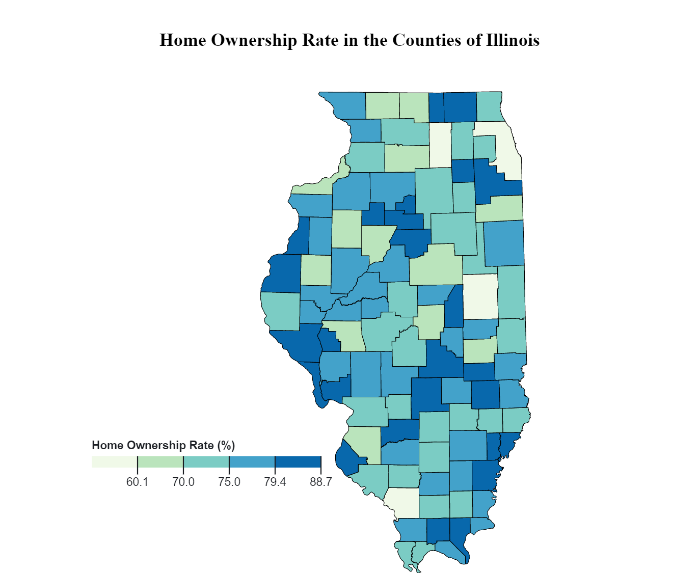
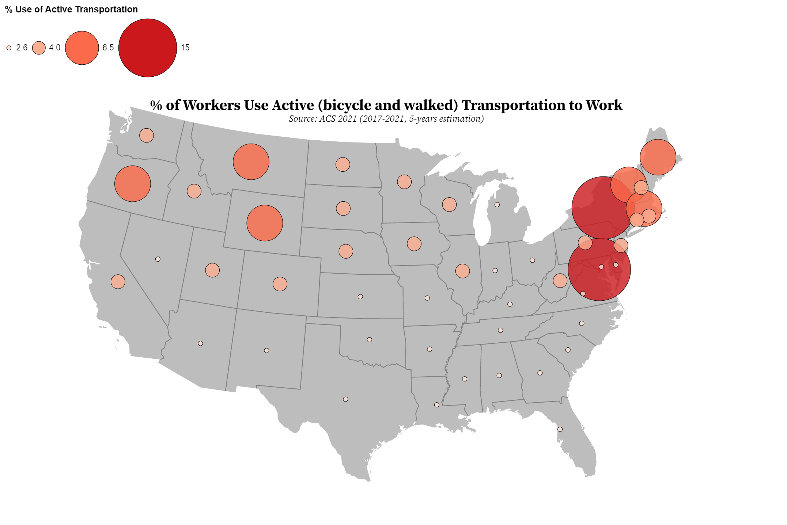
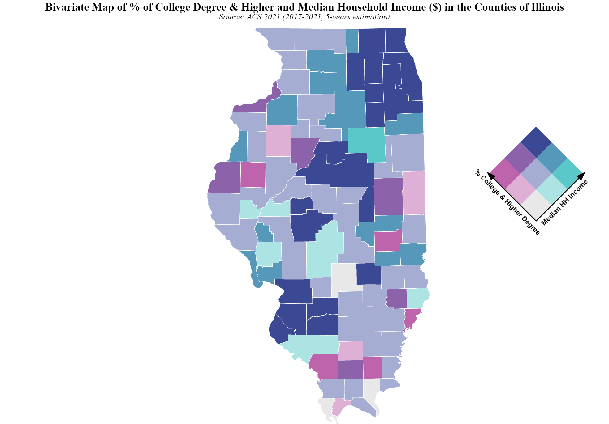

About
Welcome to my web portfolio. My name is S M Samiul Islam, and I am a geovisualization enthusiast. In this portfolio, you will find a collection of my assignments and projects related to geovisualization and GIS. My interests include cartography, spatial analysis, and the use of technology to visualize complex geographical data. Feel free to explore my work and get in touch if you have any questions or would like to collaborate.
The map presented here displays the homeownership rates among the counties of Illinois in 2021. The majority of the counties have homeownership rates above 70%, indicating a high level of residential stability in the state. Interestingly, the counties with the highest rates of homeownership (>80%) are relatively rare in the data set, but they exhibit a distinct spatial pattern throughout the state. Specifically, the lower middle portion of Illinois, including counties such as Fayette and Hardin, stands out as having the highest concentration of the highest level of homeownership.
Notably, we found that most counties with large cities do not have the highest percentages of homeownership, which may reflect a greater prevalence of rental housing and/or a more transient population in these areas. These results highlight the importance of examining spatial patterns and demographic factors when analyzing housing trends in a given region. Overall, the map provides valuable insights into the distribution of homeownership rates across Illinois and may be useful for policymakers and researchers seeking to understand housing dynamics in the state better. View the interactive choropleth map here. The map shows the percentage of workers (16 years and older) who use active (walk and bike) transportation to work by state. The data was obtained from the American Community Survey (ACS) 2021 (2017–2021, 5-year estimation). To reduce class differences and determine what the pattern would be if raw numbers were utilized, I used natural breaks. We have seen from the map that west-coastal states (New York and Washington, DC) have the highest percentage of workers who use bikes and walk to commute to work. Though the number is lower, it shows a sustainable transportation mode. However, the southern midwest states have the lowest percentage of active transportation use. Alabama shows the lowest percentage use (1.2%) of active transportation. Mostly big cities of east coast states have the better contribution in this case as they focus more on mixed land use, which negates car dependency. The data distribution doesn't show a scattered scenario but rather a more clustered scenario among the states. View the interactive point symbol map here. Isarithmic Mapping of Yearly Total Precipitation, Source: [The Iowa Environmental Mesonet (IEM)] https://mesonet.agron.iastate.edu/climodat` View the interactive Isarithmic Map here. The above bivariate map shows the percentage of the college- or higher-educated population (%) and the median household income (in the last 12 months) in the counties of Illinois for 2021. I used a "BuPu" color scheme to display your variables "% of college or higher degree" and "median household income" on the bivariate map; the colors range from blue to purple.
The combination of light blue and light purple (lower left) represents a lighter and less saturated blue and purple mixture, which shows a low level of median household income values and a lower level of college- or university-educated population. Their relation is defined as low-low on the legend. Only three counties have a median household income between $45,000 and $48,000, and between 45% and 47% of their people have college or university degrees. Their location is in the southern part of Illinois.
On the other hand, counties in the northwest, mid-Illinois, and southwest of Illinois have a higher median household income ($) and a higher percentage of people with a higher level of education. So, this is a high-high level of relationship in those counties. These counties are close to each other, which means that their economies are grouped together. The majority of the areas are under the mid-level of median household income ($52k to $60k) and have a college- or higher-educated population (50–57%). On the map, it is defined as medium-medium relationship.
Another interesting finding of this map is that there is a positive relationship between these two variables. There are only a small number of counties or unexpected patterns or outliers with a high percentage of college- or higher-educated residents and a low level of median household income, and vice versa. Dark purple (for high median income but low higher education) or dark blue (for low higher education but high median household income) are the colors that represent those counties. Those counties are also clustered throughout the state. View the interactive Bivariate Map here.Assignments
Choropleth Mapping

Point Symbol Mapping

Isarithmic Mapping

Bivariate Mapping
